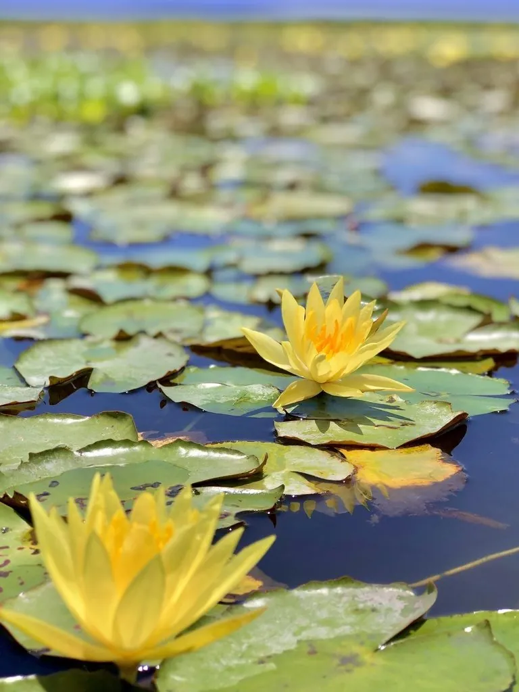

水生植物 · 植物界
墨西哥黄睡莲 Nymphaea mexicana

睡莲科多年生水生草本，花鲜黄色、挺出水面，靠块茎与匍匐枝蔓延，原产墨西哥与美国南部，适应力强。
- 分类
- 门被子植物门纲木兰纲目睡莲目科睡莲科属睡莲属
- 栖息环境
- 池塘、沼泽、缓流河湾的浅水区，喜强光、温暖
- 地理分布
- 原产墨西哥与美国南部，现热带、亚热带地区引种栽培并局部逸生
- 保护级别
- 暂无评估；在原产地常见，引种区需防范扩散
物种志
墨西哥黄睡莲为睡莲科睡莲属多年生水生草本，根状茎短，并形成香蕉状的块茎与细长匍匐枝。叶片浮水或稍挺水，卵圆形，基部深弯缺，表面绿色带紫斑，背面紫红。花挺出水面，直径 6–10 厘米，花瓣鲜黄色，萼片带绿色，雄蕊黄色，花期 5–10 月，单朵上午开放、午后闭合。
墨西哥黄睡莲原产墨西哥高原与美国南部的池塘、沼泽和缓流河湾，适宜水深 20–60 厘米，喜强光与温暖，耐寒性中等，冬季块茎可沉入泥中越冬。它靠匍匐枝和块茎迅速扩展，在适宜水域容易形成大片群落，在部分亚热带地区被视为侵入性水草。块茎富含淀粉，墨西哥当地有煮食的传统；它也是培育黄色系耐寒睡莲的重要亲本，园艺品种‘黄乔’等即以它为亲本之一。
形态与习性
- 株高浮叶直径 10–20 厘米，花挺水 10–15 厘米
- 水深适宜水深 20–60 厘米，块茎埋于底泥
- 水质喜温暖静水与肥沃底泥，耐轻度污染
- 花期5–10 月，单朵上午开放、午后闭合
- 越冬块茎沉入泥中越冬，可耐短期 0 ℃
- 繁殖匍匐枝与块茎分株，扩展迅速
趣味知识
- 它的块茎形似小香蕉，富含淀粉，墨西哥当地有煮熟食用的传统。
- 植株靠细长匍匐枝在水底蔓延，一处栽种几年便可铺满小池塘。
- 在温暖地区它生长过旺，可能挤占本土水生植物空间，引种需控制。
- 园艺上的黄色耐寒睡莲品种，很多都有墨西哥黄睡莲的血统。